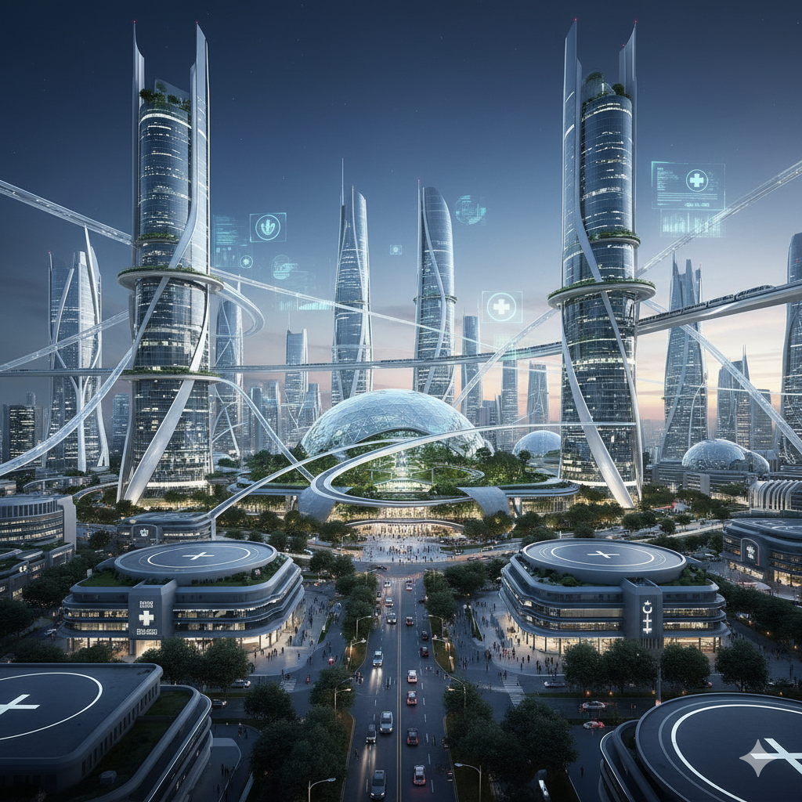
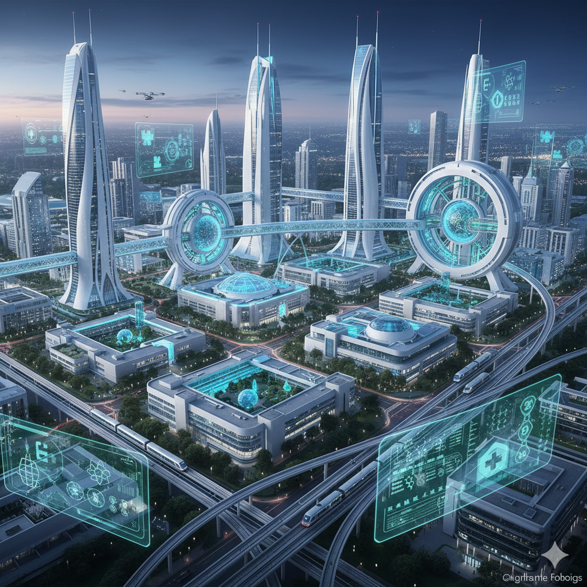
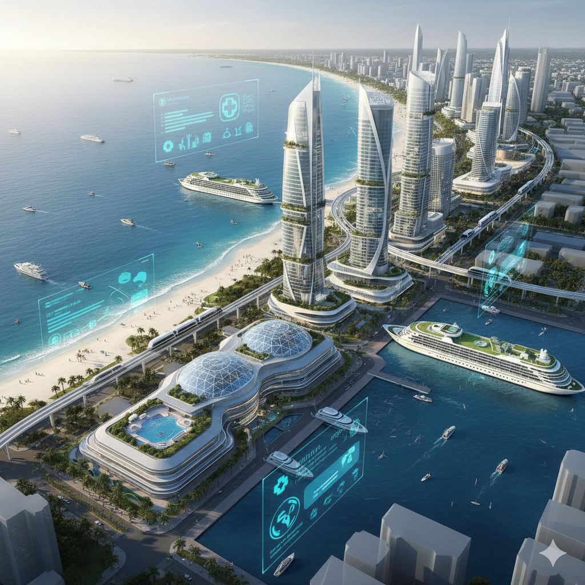
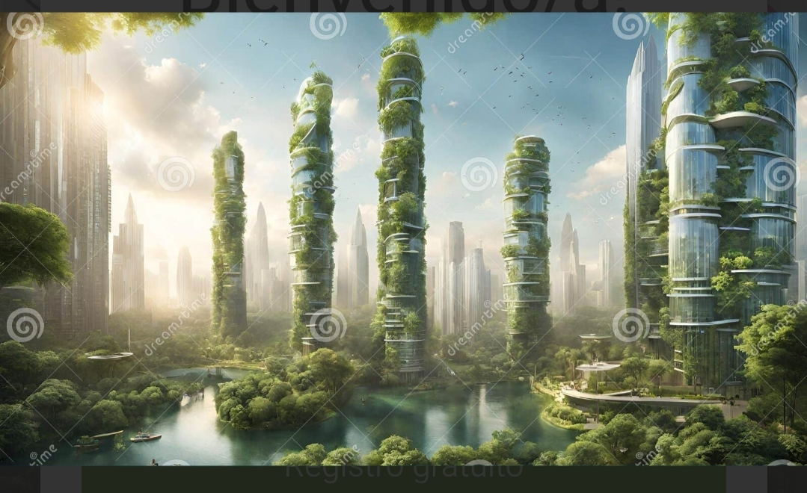
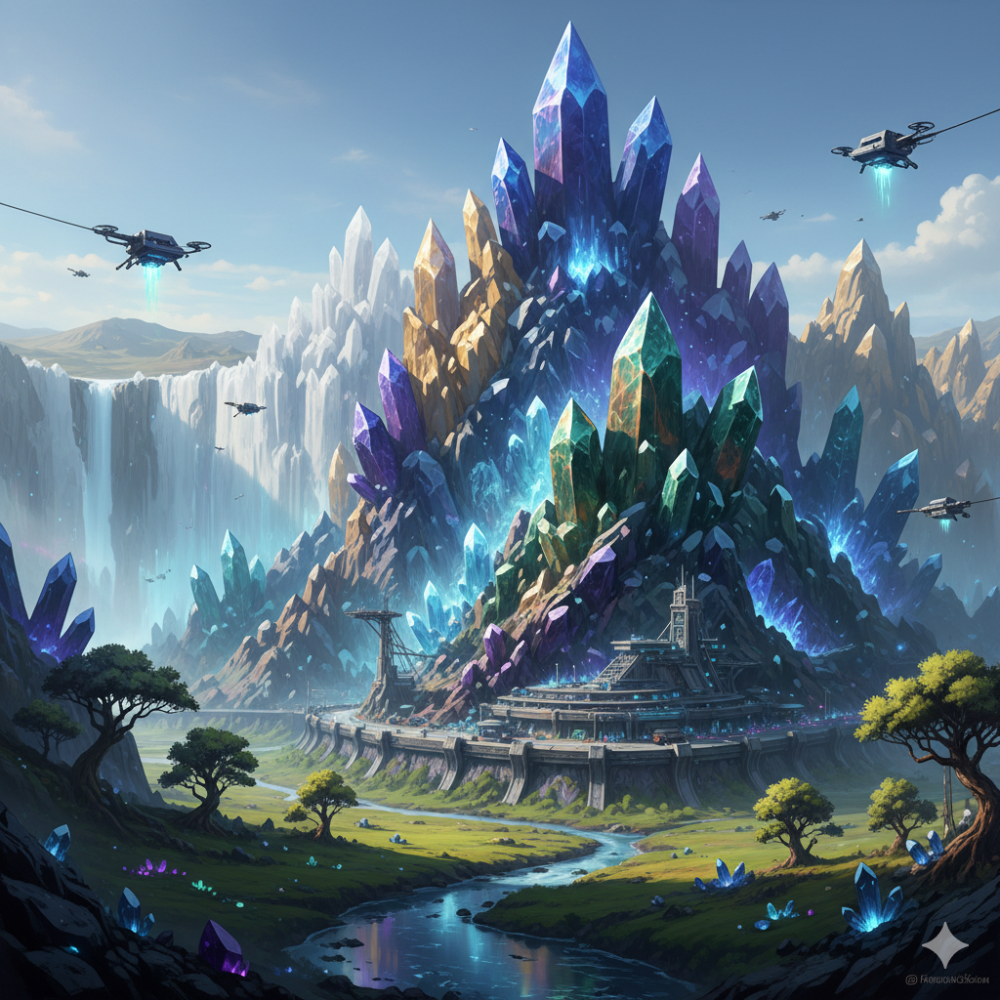
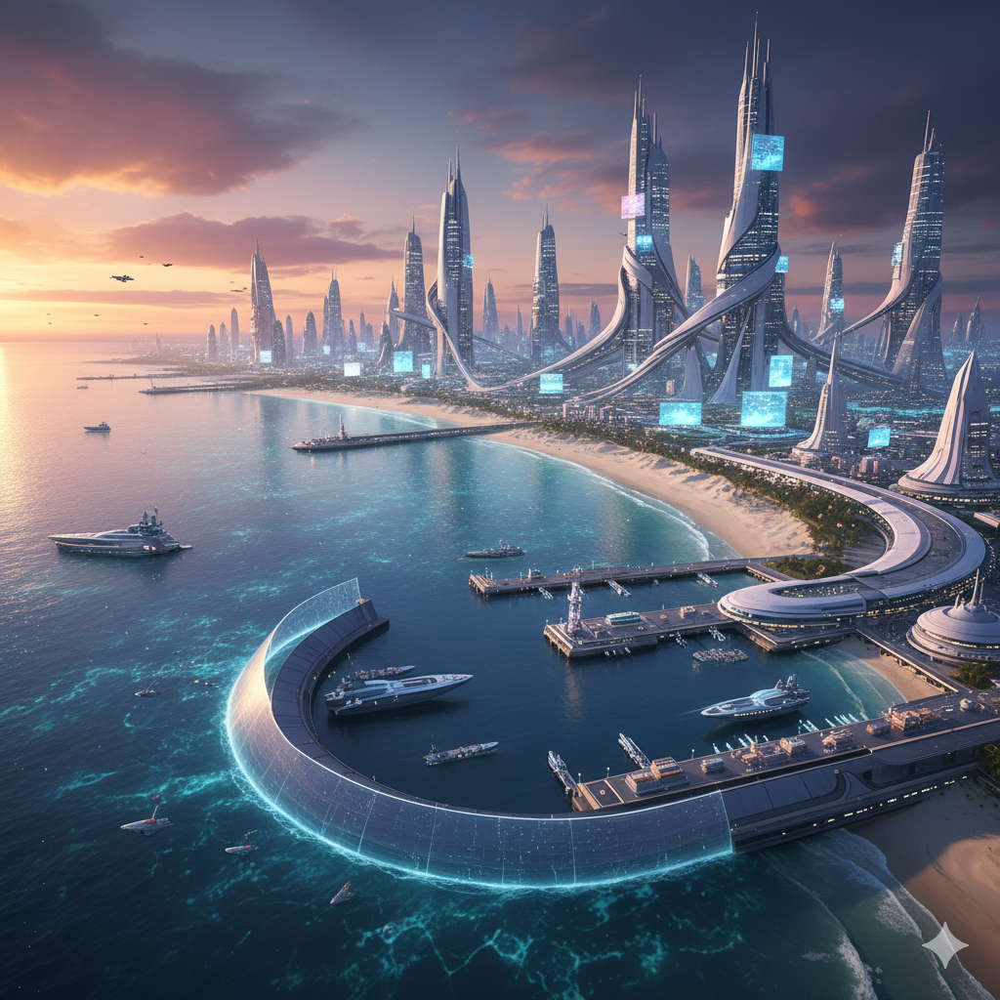
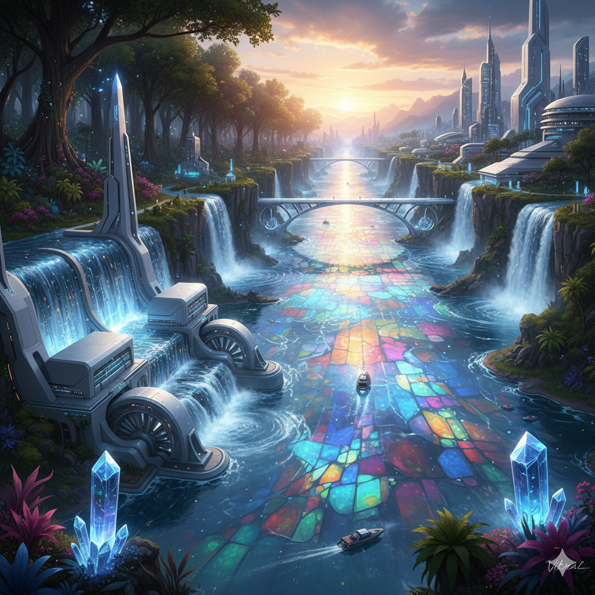
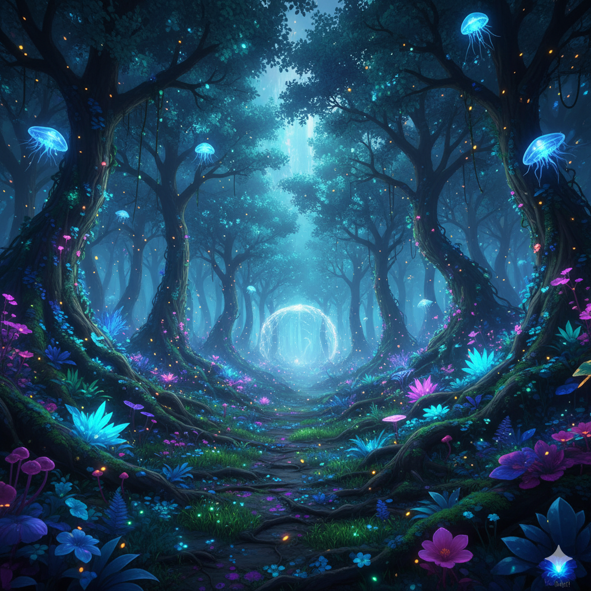

Territorial extension
Vitronia is a medium-sized country, ideal for a mixed state (land + coast)
Length (east to west): ~600 km Width (north to south): ~400 km Approximate area: 240,000 km² (similar to the United Kingdom or Oregon, USA) Estimated population: ≈ 32 million inhabitants.

HISTORY
The Origin of Vitronia Centuries ago, when ancient nations were collapsing under the weight of pollution and disease, a group of scientists, physicians, and philosophers decided to create a haven where life and technology could coexist in harmony. Guided by Dr. Lunara Vey, they built a city on a peninsula surrounded by crystal mountains and luminous seas. They named this new land Vitronia, from the ancient term "Vitra," meaning pure life. Over time, science became their moral compass. The citizens learned that progress without compassion leads to illness, and health without knowledge fades. Thus, their motto was born: "For light and life." Since then, Vitronia has grown into a beacon of balance, where every innovation seeks to care for both humanity and the planet that sustains it.
CAPITAL:
LUMINA
The country's technological and healthcare hub. Population: 8 million inhabitants.
IMPORTANT CITIES:
SANTRIX:
center of biotechnology and medical laboratories. With 5 million inhabitants.
MARIVIDA
A coastal city focused on health tourism and water sports. Population: 4 million inhabitants.
VIRELIA
A city near the forest, where nature and technology coexist. Population: 3 million inhabitants.
Rest of the country (towns, rural areas, research centers): 12 million inhabitants.
Geographical Location:
North:
Crystal Mountain Range, which serves as a natural barrier and source of rare minerals for technology.
South:
Sea of Luminosity, wide coast with futuristic ports and floating cities.
East:
Stained-Glass River (or Vitral River), which marks part of the land border and provides water and advanced hydroelectric power.
West:
Bioluminescent Forest, a protected area that also acts as a natural border.
Official Language:
Vitronese was born from the fusion of ancient languages (Latin, Esperanto, and some technical Japanese) with technological neologisms.
Official Currency:
Name: Vitra (from the Vitronese word "Vitra," which means "vital energy" or "life in balance").
ymbol: Ʌ (a letter that represents the "V" for life and the ascending flow of energy).
Monetary System Main Unit: 1 Ʌ (one Vitra) Subunits: 1 Ʌ = 100 Lumis (from the Vitronese word "Lumira," meaning "light"). Most Common Denominations: Coins: 1 Ʌ, 2 Ʌ, 5 Ʌ, 10 Ʌ Smart Banknotes: 20 Ʌ, 50 Ʌ, 100 Ʌ, 200 Ʌ, 500 Ʌ
National Symbols:
BANDERA
Balance between nature and technology.
Sky blue at the top, representing the energy of the sky and the purity of knowledge. Bright white in the center, a symbol of light and clean technology. Emerald green at the bottom, reflecting the connection with nature.
ESCUDO
It shows a central crystal surrounded by branches of the bioluminescent tree of Virelia. Behind the crystal, a quill (wisdom) and an energy bolt (technology) cross each other.
LEMA
In summary, the Vitronian philosophy seeks to achieve "Light" (Lumira) and "Life in Balance" (Vitra) by maintaining a relationship of mutual respect and dependence between technological innovation and the natural ecosystem.
LUZ Y VIDA
Form of Government:
Humanist Technocracy
System Type A mix between participatory democracy and ethical technocracy.
"Science guides, the people decide."
Main Structure Luminic Council: 12 experts (called Luminarchs) chosen by merit and citizen vote. They lead areas such as health, technology, education, and environment. Vita Assembly: A Parliament where all citizens can vote on laws through the VitraNet network. Ethical Council: Oversees the correct use of artificial intelligence and biotechnology.